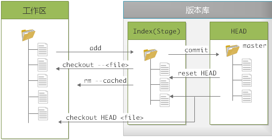
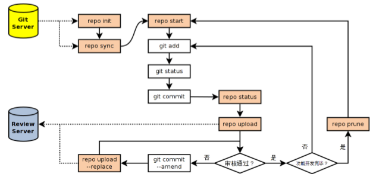

0 初始化
每台计算机只需配置一次，升级时会保留配置信息。
Git自带一个 git config 的工具帮助设置控制Git外观和行为的配置变量，这些变量存在于三个不同的位置：
- /etc/gitconfig：包含系统上每一个用户的及他们仓库的通用配置。如果带有
--system选项的git config时，会从此文件读写变量 - ~/.gitconfig或~/.config/git/config：只针对当前用户。使用
--global选项读写此文件 - 当前仓库目录中的config(.git/config)：针对该仓库
每一级别覆盖上一级别
基本配置
1 | 配置用户名和邮箱 |
1 基础
Git使用基本流程

1.1 获取git仓库
获取仓库的方法有两种
1.1.1 现有目录初始化
1 | 进入项目目录 |
1.1.2 克隆现有仓库
1 | RepoUrl根据协议不同 地址类型也不近相同 |
1.2 忽略文件
1 | cat .gitignore |
- 所有空行或以
#开头的行都会被git忽略 - 可以使用标准的glob模式匹配
- 匹配模式可以以
/开头防止递归 - 匹配模式可以以
/结尾指定目录 - 要忽略指定模式以外的文件或目录，可以在模式前加
!取反
glob模式：shell中简化的正则
*：匹配零个或任意多个字符[abc]：匹配a,b,c之间任意一个字符?：匹配任意一个字符- [0-9]：表示匹配0-9之间人一个数字
a/**/z：匹配任意中间目录，例：a/b/z,/a/b/c/z…- more: https://github.com/github/gitignore
1.3 本地文件管理

- 工作区：未隐藏的部分
- 版本库：
.git目录- Index：
.git/index，暂存区 - HEAD：
.git/HEAD，是一个指针，指向当前分支的版本 - master：只是一个存放40位sha-1的文件而已
- Index：
1 | 用暂存区的文件替换工作区的文件 撤销修改 |
后悔药使用指南:
git checkout . 还没有add
git reset
1.4 远程仓库
1 | 显示所有的读写远程仓库 |
1.5 打标签
1 | 列出所有的标签 |
1.5 别名
可以给命令起别名 简化操作
1 | 之后可以用 git co 代替 git checkout |
1.7 other
1 | 修改author |
2 分支
简单来说就是时间线，每条时间线上有很多时间点(commit)
1 | 创建分支 dev |
2.1 冲突
当合并分支不再是 fast-forward 模式时，Git只是试图将各自修改的部分合并起来，但这种合并会有冲突
1 | git merge feature1 |
Git提示我们需要手动解决冲突后再提交，通过git status也可以知道冲突的文件
在解决冲突时，可以使用meld fileName
1 | <<<<<<< HEAD |
<<<<<<<，=======，>>>>>>> 标记出不同分支的内容，需要手动去解决，比如手动修改后：
1 | Creating a new branch is quick and simple. |
这样就可以再进行提交了
通过git log --graph --pretty=oneline --abbrev-commit可以查看分支合并情况
中断合并git merge --abort
2.2 bug分支
背景：当前正在dev进行工作，且进行到一半，还没法提交，预计还需要1天完成，此时来了一个bug，这个bug必须在两小时内修复
Git提供了stash功能，可以把当前工作现场存储起来，等以后恢复后继续工作
1 | git stash |
此时使用git status可以看到工作区是干净的，可以放心创建分支来修复bug。比如现在在master上创建分支修复bug
1 | git checkout master |
还可以使用git stash apply stash@{0}恢复，然后现场还在，需要通过git stash drop stash@{0}删除
注意：git stash之前，一定要先用git status看一下，是否有Untrackted files。如果有，需要先add。因为git stash不能将untrakcted file压栈
没有commit切换分支是会报错的
工作区和暂存区是一个公开的平台，任何一个分支都会用到
2.3 Feature分支
开发时，每添加一个新功能最好新建一个feature分支，因为这个功能的代码可能是实验性质的，不能把主分支搞乱。
新建Feature分支，开发，合并，删除Feature分支
开发到一半，觉得这个不行，可以使用git branch -D fearture进行强行删除
2.4 多人协作
首先，试图使用git push origin <branchName>推送自己的修改
如果推送失败，则因为远程分支比你新，需要先用git pull试图合并
若果有冲突，则解决冲突，并在本地提交
没有冲突或者解决冲突后，再用git push origin <branchName>推送就能成功
如果
git pull提示no tracking information，则说明本地分支和远程分支的链接关系没有创建，用命令git branch --setupstream-to=origin/branch-name branch-name建立本地分支与远程分支的关联本地新建分支如果不推送到远程，对其他人就是不可见的，于是可以随便玩..
git pull=git fetch+git merge
2.5 变基rebase
合并分支的一种方式
- rebase操作可以把本地未push的分叉提交历史整理成直线
- 目的是为了我们在查看历史提交的变化时更容易，因为分叉的提交需要三方对比
- 变基有风险！
3 Patch
- 创建补丁
git diff > my.patch
git diff --no-prefix > my.patch
git diff master > my.patch
1 | 将最近的三次提交 变为patch文件 -s 表示加上当前用户签名 |
- 通过邮件发送补丁
1 | git send-email *.patch |
git am应用来自邮箱的补丁，特别是被mbox格式化过的
- 应用补丁
1 | 基于HEAD~3创建一个分支 |
- cherry-pick
1 | 引入特性分支的某个提交 |
4 Repo
repo就是通过Python对git的一个封装，用于管理多个Git版本库
4.1 安装repo
1 | 下载repo的引导脚本 |
4.2 初始化
1 | mkdir work-dir |
此时工作目录就会有个.repo文件夹，其中有个manifest.xml文件，这文件里面包含了Android各项目的信息
代码库本地镜像
repo init --mirror -u <gitUrl>
4.3 同步
1 | 同步代码到本地 |
4.4 常用命令
1 | 获取帮助 |
repo init
repo sync
相当于
git clone或git update+git rebase origin/branchrepo start
对
git checkout -b的封装repo start <newBranchName> [--all | <project>...]repo checkout
对
git checkout的封装repo status
1
2project system/core/ (*** NO BRANCH ***)
-m fs_mgr/fs_mgr_fstab.cpp
每个小节的首行显示项目名称,以及所在分支名称
之后显示该项目中文件变更状态。头两个字母显示变更状态,后面显示文件名或者其
他变更信息
第一个字母表示暂存区的文件修改状态
- - :没有改变
- A :添加 (不在HEAD中, 在暂存区)
- M :修改 (在HEAD中, 在暂存区, 内容不同)
- D :删除 (在HEAD中, 不在暂存区)
- R :重命名 (不在HEAD中, 在暂存区, 路径修改 )
- C :拷贝 (不在HEAD中, 在暂存区, 从其他文件拷贝)
- T :文件状态改变 (在HEAD中, 在暂存区, 内容相同)
- U :未合并, 需要冲突解决
第二个字母表示工作区文件的更改状态
- - :新/未知 (不在暂存区, 在工作区)
- m :修改 (在暂存区, 在工作区,被修改)
- d :删除 (在暂存区,不在工作区)
两个表示状态的字母后面,显示文件名信息。如果有文件重命名还会显示改变前后的
文件名以及文件的相似度
repo diff [<project>…]
是对
git diff命令的封装,用以分别显示各个项目工作区下的文件差异

5 Gerrit
先加ssh-key
Gerrit下的Git服务器只允许用户向特殊的引用ref/for/<branchName>推送，这样才会创建一个reviewId